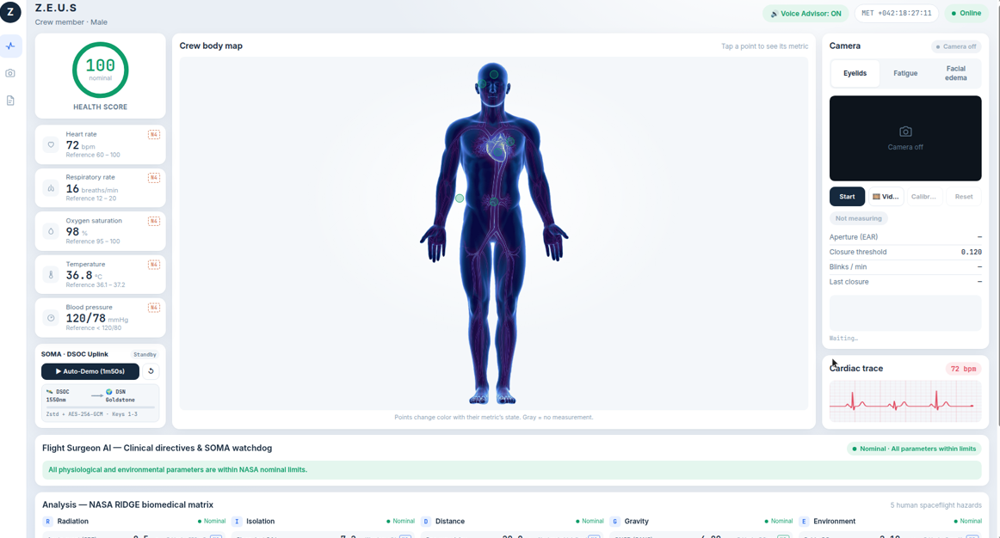

NASA Space Apps Challenge 2026 · Team
Z.E.U.S.
A health-monitoring cockpit for a deep-space crew. The browser shows a crew profile, a body map, a camera, a cardiac trace, and clinical alerts. A local C++17 daemon streams simulated biomedical telemetry, scores it, and raises threshold alerts.
Nicolás owns the repository and integrated the cockpit. Clara Culler built the interface. Nahuel Nuñez wrote the C++ daemon.
View repository (opens in a new tab)